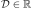
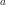
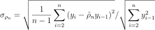

Dickey-Fuller stationarity test¶
The Dickey-Fuller test checks the stationarity of a scalar time series using one time series. It assumes that the process with , discretized on the time grid writes:
(1)¶
where and where  or  or both can be assumed to be equal to 0.
or both can be assumed to be equal to 0.
The Dickey-Fuller test checks whether the random perturbation at time  vanishes with time.
vanishes with time.
When and , the model (1) is said to have a drift. When and , the model (1) is said to have a linear trend.
In the model (1), the only way to have stochastic non stationarity is to have (if , then the process diverges with time which is readily seen in the data). In the general case, the Dickey-Fuller test is a unit root test to detect whether  against :
against :
The test statistics and its limit distribution depend on the a priori knowledge we have on and . In case of absence of a priori knowledge on the structure of the model, several authors have proposed a global strategy to cover all the sub-cases of the model (1), depending on the possible values on and .
The strategy implemented is recommended by Enders (Applied Econometric Times Series, Enders, W., second edition, John Wiley & sons editions, 2004.).
We note the data, by the Wiener process, and , .
1. We assume the model (2):
(2)¶
The coefficients are estimated by using ordinary least-squares fitting, which leads to:
(3)¶![\underbrace{\left(
\begin{array}{lll}
\displaystyle n-1 &\sum_{i=1}^n t_{i} &\sum_{i=2}^n y_{i-1}\\
\displaystyle \sum_{i=1}^n t_{i} &\sum_{i=1}^n t_{i}^2 &\sum_{i=2}^n t_{i} y_{i-1}\\
\displaystyle \sum_{i=2}^n y_{i-1}& \sum_{i=2}^n t_{i}y_{i-1} &\sum_{i=2}^n y_{i-1}^2
\end{array}
\right)}_{\mat{M}}
\left(
\begin{array}{c}
\hat{a}_n\\
\hat{b}_n\\
\hat{\rho}_n
\end{array}
\right)=
\left(
\begin{array}{l}
\displaystyle \sum_{i=1}^n y_{i} \\
\displaystyle \sum_{i=1}^n t_{i} y_{i}\\
\displaystyle \sum_{i=2}^n y_{i-1} y_{i}
\end{array}
\right)](../../_images/math/8e16e71866eb30ded07fb74e365b0ae40b2bd0e3.svg)
We first test:
(4)¶
thanks to the Student statistics:
where is the least square estimate of the standard deviation of , given by:
which converges in distribution to the Dickey-Fuller distribution associated to the model with drift and trend:
The null hypothesis from (4) is accepted when where is the test threshold of level  .
.
The quantiles of the Dickey-Fuller statistics for the model with drift and linear trend are:
1.1. Case 1: The null hypothesis from (4) is rejected
We test whether :
(5)¶
where the statistics converges in distribution to the Student distribution Student with , where is the least square estimate of the standard deviation of , given by:
- The decision to be taken is:
If from (5) is rejected, then the model 1 (2) is confirmed. And the test (4) proved that the unit root is rejected : . We then conclude that the final model is : with which is a trend stationary model.
If from (5) is accepted, then the model 1 (2) is not confirmed, since the trend presence is rejected and the test (4) is not conclusive (since based on a wrong model). We then have to test the second model (7).
1.2. Case 2: The null hypothesis from (4) is accepted
We test whether :
(6)¶
with the Fisher statistics:
where is the sum of the square errors of the model 1 (2) assuming from (6) and is the same sum when we make no assumption on and .
The statistics converges in distribution to the Fisher-Snedecor distribution FisherSnedecor with . The null hypothesis from (4) is accepted when  where is the test threshold of level .
where is the test threshold of level .
- The decision to be taken is:
If from (6) is rejected, then the model 1 (2) is confirmed since the presence of linear trend is confirmed. And the test (4) proved that the unit root is accepted: . We then conclude that the model is: which is a non stationary model.
If from (6) is accepted, then the model 1 (2) is not confirmed, since the presence of the linear trend is rejected and the test (4) is not conclusive (since based on a wrong model). We then have to test the second model (7).
2. We assume the model (7):
(7)¶
The coefficients are estimated as follows:
(8)¶
We first test:
(9)¶
thanks to the Student statistics:

where is the least square estimate of the standard deviation of , given by:

which converges in distribution to the Dickey-Fuller distribution associated to the model with drift and no linear trend:
The null hypothesis from (9) is accepted when where is the test threshold of level .
The quantiles of the Dickey-Fuller statistics for the model with drift are:
2.1. Case 1: The null hypothesis from (9) is rejected
We test whether  :
:
(10)¶
where the statistics converges in distribution to the Student distribution Student with , where is the least square estimate of the standard deviation of , given by:

- The decision to be taken is:
If from (10) is rejected, then the model 2 (7) is confirmed. And the test (9) proved that the unit root is rejected: . We then conclude that the final model is: with which is a stationary model.
If from (10) is accepted, then the model 2 (7) is not confirmed, since the drift presence is rejected and the test (4) is not conclusive (since based on a wrong model). We then have to test the third model (12).
2.2. Case 2: The null hypothesis from (9) is accepted
We test whether :
(11)¶
with a Fisher test. The statistics is:
where is the sum of the square errors of the model 2 (7) assuming from (11) and is the same sum when we make no assumption on and .
The statistics converges in distribution to the Fisher-Snedecor distribution FisherSnedecor with . The null hypothesis from (4) is accepted if when where is the test threshold of level .
- The decision to be taken is:
If from (11) is rejected, then the model 2 (7) is confirmed since the presence of the drift is confirmed. And the test (9) proved that the unit root is accepted:
 . We then conclude that the model is: which is a non stationary model.
. We then conclude that the model is: which is a non stationary model.If from (11) is accepted, then the model 2 (7) is not confirmed, since the drift presence is rejected and the test (9) is not conclusive (since based on a wrong model). We then have to test the third model (12).
3. We assume the model (12):
(12)¶
The coefficients are estimated as follows:
(13)¶
We first test:
(14)¶
thanks to the Student statistics:
where is the least square estimate of the standard deviation of , given by:

which converges in distribution to the Dickey-Fuller distribution associated to the random walk model:
The null hypothesis from (14) is accepted when where is the test threshold of level .
The quantiles of the Dickey-Fuller statistics for the random walk model are:
- The decision to be taken is:
API:
See
DickeyFullerTest